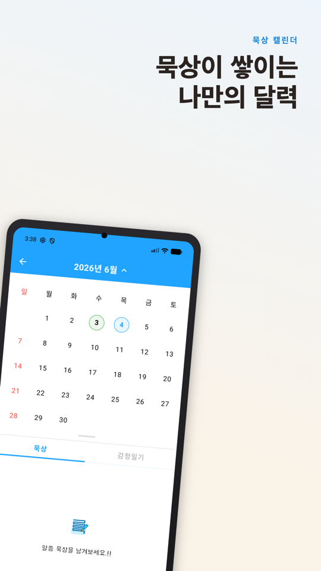
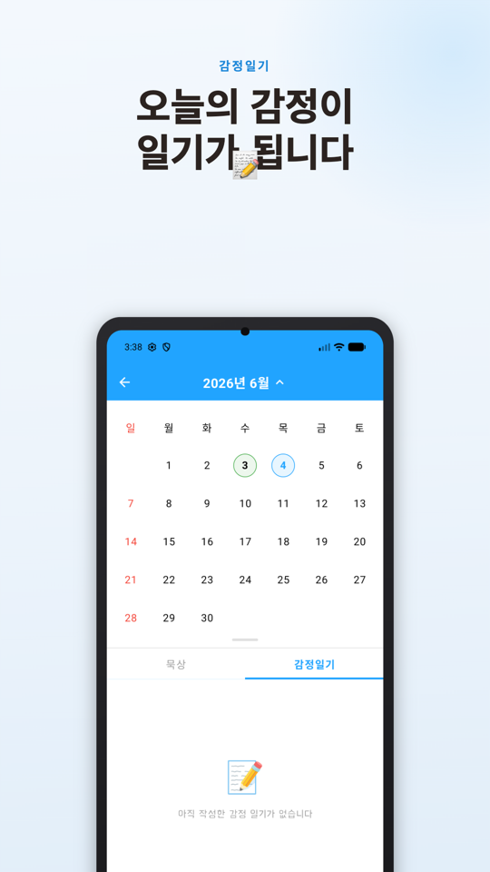
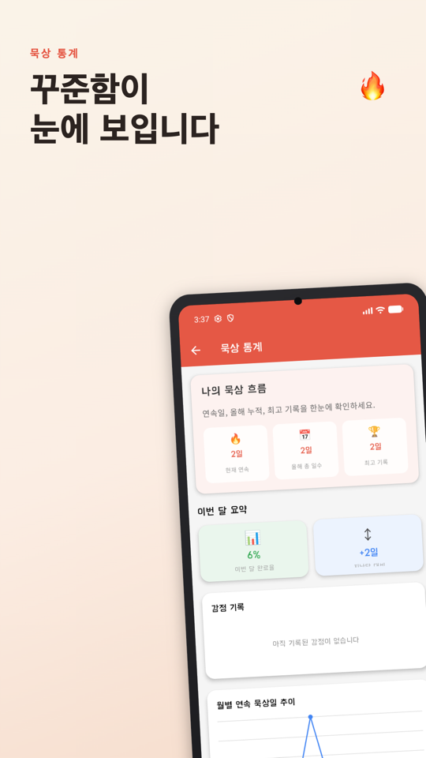
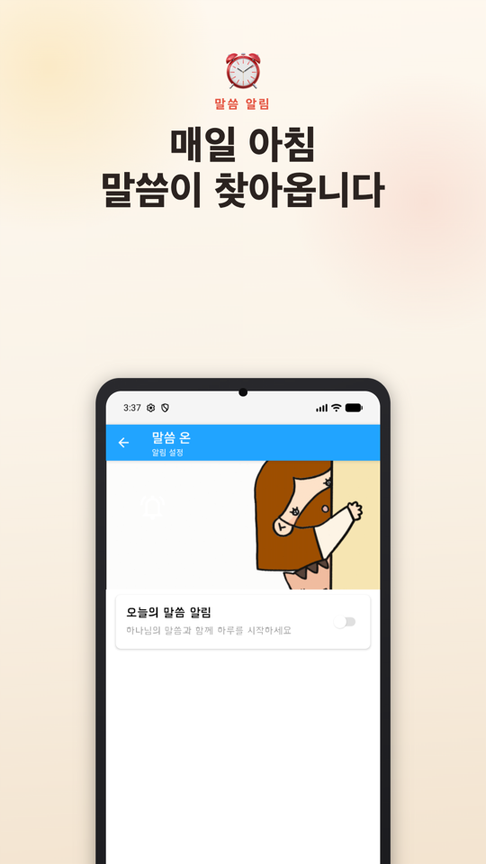
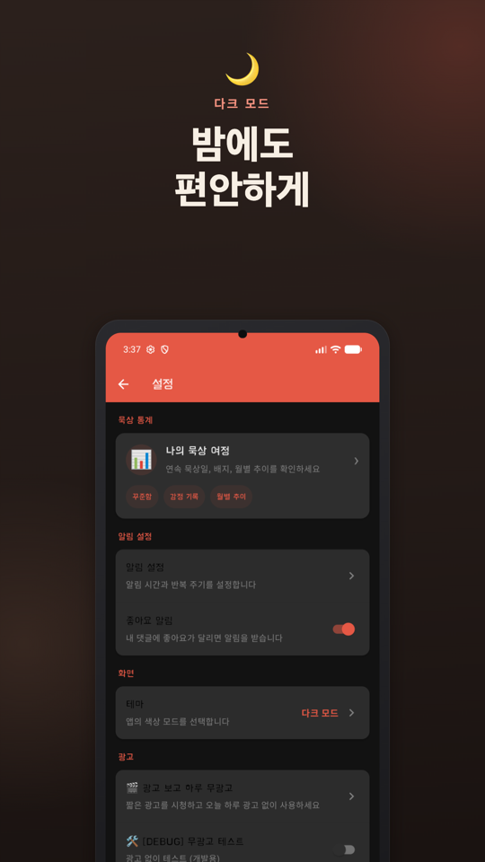
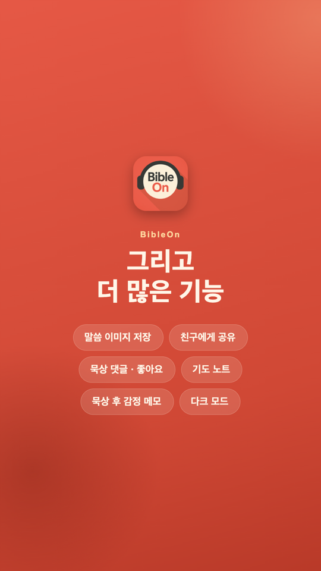

말씀온과 함께라면
말씀온이 당신의
영적 습관을 도와드려요
개역개정 말씀 묵상, QT 노트, 감정 일기, 그리고 1분이면 끝나는 '말씀 외우기'까지. 지하철에서, 점심시간 틈새에, 잠들기 전 고요한 시간에. 언제 어디서든 '말씀온'을 켜세요.
주요 기능
매일의 묵상을 돕는 일곱 가지 도구
-
매일 도착하는 위로의 성경 말씀
매일 아침, 오늘의 말씀이 알림으로 찾아옵니다. 알림에서 바로 말씀을 읽고 하루를 은혜롭게 시작하세요. 알림 시간은 언제든 바꿀 수 있어요.
-
NEW! 1분 말씀 외우기
오늘의 말씀을 빈칸 채우기 게임으로 외워보세요. 3단계로 조금씩 가려지고, 1분이면 한 구절이 마음에 남습니다. 외운 말씀은 달력에 모여 언제든 다시 외우며 지난번보다 얼마나 나아졌는지 확인할 수 있어요.
-
단어와 감정으로 시작하는 묵상
오늘 말씀에서 와닿는 단어를 고르고, 그날의 감정과 함께 묵상을 남겨요. 감정만 골라도 감정 일기에 차곡차곡 쌓입니다.
-
성장 여정 확인
달력과 통계로 나의 묵상 기록, 연속 묵상, 외운 말씀 개수까지 영적 성장 여정을 한눈에 확인하세요.
-
나만의 QT 노트 & 감사 일기
오늘 주신 말씀에 맞는 묵상 질문과 함께 묵상한 내용을 간편하게 기록하세요. 기도 제목과 감사한 일들을 적으며 나만의 신앙 다이어리를 만들어보세요.
-
말씀 이미지 저장 & 공유
마음에 와닿는 구절과 일러스트를 원본 화질 그대로 저장하세요. 카카오톡, 인스타그램으로 친구와 가족에게 복음과 위로를 선물하세요.
-
홈 화면 위젯 & 다크 모드
오늘의 말씀·연속 묵상·주간 진행 위젯으로 홈 화면에서도 말씀과 함께. 다크 모드로 눈도 편안하게.
미리보기
말씀온, 이렇게 생겼어요






옆으로 넘기며 살펴보세요
움직이는 말씀카드
마음에 스며드는 애니메이션 말씀
말씀온이 인스타그램과 쓰레드에 나누고 있는 애니메이션 말씀카드예요.
화면에 들어오면 자동으로 재생돼요 · 스피커 버튼을 누르면 소리가 나와요
사용자 후기
먼저 만난 분들의 이야기
"5년째 말씀온으로 하루를 시작합니다. 그날그날 주시는 말씀과 일러스트를 보며 성령님께서 이 앱을 만드시는 분을 인도하시는걸 느꼈습니다."
Google Play 리뷰"마음이 힘들고 지칠때, 마치 성경조차 펴기가 힘겨울때 말씀온의 말씀과 그림으로 위로 받습니다. 말씀과 그림이 날실과 씨실처럼 엮어져있는 것 같아 늘 특별한 경험이 됩니다."
Google Play 리뷰"교회학교 교사인데 매일 아이들에게 말씀묵상과 기도 자료로 활용하고 있습니다 넘 좋아요~^^"
Google Play 리뷰"요즘 말씀보기가 소홀했는데 그림체도 너무 예쁘고 접근성도 좋아서 자주 이용합니다. 앞으로도 기대할게요!"
Google Play 리뷰"리뷰를 잘 작성하지 않는데.. 말씀 과 그림이 읽고 보기에 이해도 쉬우며 귀엽습니다^^ 알림기능도 있어서 참 편하고 좋습니다"
Google Play 리뷰"그림이 너무 귀여워서 하루 한컷 씩 힐링하고 있어요 이전에 봤었던 그림을 다시볼수있게 모아두는곳이있으면 좋겠어요"
Google Play 리뷰"좋습니다:)귀엽고도핵심의느낌을주는 그림이 넘넘 좋습니다:) 근데말씀이 똑같은게 계속나오는기분이...그래도 이퀄리티를 받을수있다는거에 감사해야겠죵"
Google Play 리뷰"너무 좋아요 하루를 은혜로 시작 할 수 있어서 더 좋아요"
Google Play 리뷰"요즘 말씀보기가 소홀했는데 그림체도 너무 예쁘고 접근성도 좋아서 자주 이용합니다. 앞으로도 기대할게요!"
Google Play 리뷰"넘 이쁜 그림과 말씀이 너무 잘 이해되고 마음에 와 닿아묘^^ 계속 보고 싶어요♡♡♡"
Google Play 리뷰"묵상할수 있는 그림과 말씀 너무 좋네요 추천합니다"
Google Play 리뷰"뎅이 작가님~ 인스타의 나눔이 너무너무 너무 좋아서 늘 저의 삶을 되돌아 보았는데ㅜㅜ 이렇게 어플로 나오다니 감격이~ 앞으로 발걸음에 기도로 함께 할게요!! 너무 사랑스러운 그림때문에 행복해집니다~♡"
Google Play 리뷰FAQ
자주 묻는 질문
말씀온은 무료인가요?
네, 무료로 다운로드하여 사용하실 수 있습니다.
어떤 성경을 사용하나요?
개역개정 성경을 기반으로 매일 말씀을 전해드립니다.
아이폰에서도 사용할 수 있나요?
네, 안드로이드(구글 플레이)와 아이폰(App Store) 모두 지원합니다.
어떤 기능이 있나요?
매일 말씀 알림, QT·기도 노트, 감정 일기, 말씀 외우기(빈칸 채우기), 묵상 달력·통계, 홈 화면 위젯, 예쁜 말씀 이미지 저장·공유 기능을 제공합니다.
말씀 외우기는 어떻게 하나요?
오늘의 말씀 카드 아래 '말씀 외우기' 버튼을 누르면 빈칸 채우기 게임이 시작됩니다. 3단계로 조금씩 가려지고 1분이면 끝나요. 외운 말씀은 달력에 모여 언제든 다시 복습할 수 있습니다.
제 기록은 안전하게 보관되나요?
개인정보처리방침에 따라 여러분의 묵상과 기도 기록을 소중히 보호합니다.
말씀온, 당신의 영혼을 위한
가장 따뜻한 동반자
'말씀온'은 단순한 앱이 아니라, 매일 하나님과 동행하는 당신의 여정을 가장 가까이에서 돕는 따뜻하고 든든한 동반자가 되어줄 거예요. 바쁜 하루, 잠시 멈춰 서서 하나님의 사랑 가득한 음성에 귀 기울여보는 건 어떤가요?